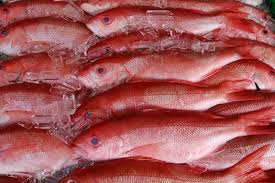
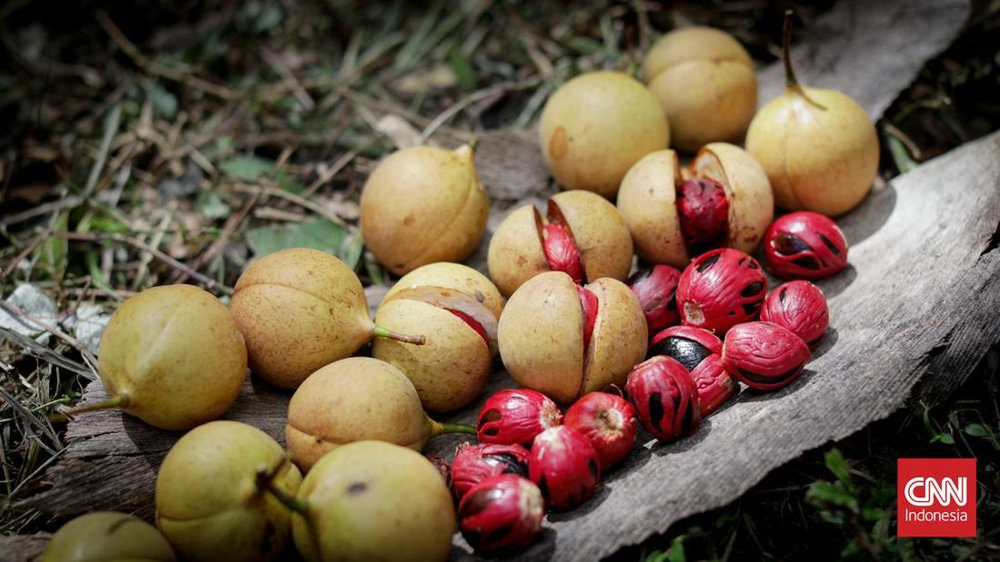

Simfoni Rempah dalam Ikan Kuah Pala Banda

Ikan Segar Pilihan
Menggunakan ikan laut segar seperti kakap atau kerapu yang menghasilkan kaldu bening dan daging ikan yang lembut.

Buah Pala Banda Asli
Aroma dan rasa khas pala dari Kepulauan Banda menjadi kunci utama, memberikan kehangatan dan keunikan tak tertandingi.

Rempah Harmonis
Kunyit, jahe, serai, bawang, dan cabai (opsional) berpadu harmonis menyeimbangkan dan memperkaya cita rasa kuah.